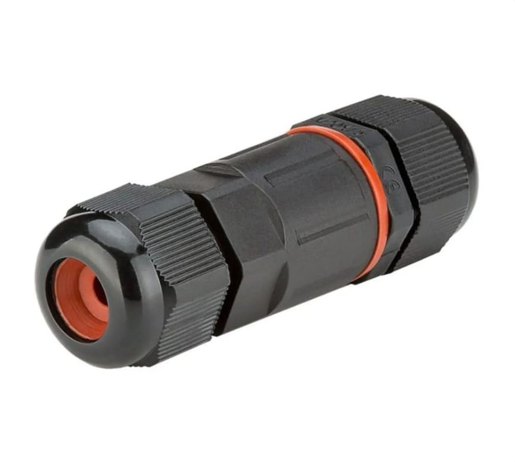

Responder a todos os pedidos de orçamento, sem carregar linhas à mão no PHC.
Uma plataforma feita para a CLC que lê os pedidos tal como chegam, em PDF, Excel, fotografia ou WhatsApp, encontra cada produto nos vossos artigos do PHC, aplica as vossas regras de preço e deixa o orçamento pronto a validar. Nada sai sem o OK da vossa equipa.
Cerca de 25 por semana, a maioria por email. Hoje não dá para responder a todos.
Carregados à mão no PHC para responder a uma única lista de obra de 54 linhas.
Nos três exemplos que nos enviou: PDF, Excel e uma fotografia. Nenhum com as vossas referências.

Só uma fotografiaSeis coisas que o Ricardo nos disse
Não dá para responder a todos
Cerca de 100 pedidos por mês. Cada resposta é uma venda possível e reforça a relação com o instalador.
"Se tivéssemos hipótese de responder a todos, preferia responder a todos."
O que demora é carregar
Num orçamento grande, com cem linhas, os códigos entram à mão no PHC, um a um. As contas, essas, são rápidas.
"O que demora mais, e é isso que queremos acabar, é carregá-lo."
O "fio 1,5 azul"
Os clientes mais antigos pedem pelo nome. Vocês têm as descrições, os códigos de barras, as referências de fornecedor e as cores.
"É caixa XPTO, é o fio 1,5 azul."
O cobre muda todos os dias
Os cabos com stock seguem o preço de tabela; os outros dependem da fábrica. Por isso o sistema prepara e o operador aprova.
"Recebo hoje uma proposta e daqui a três dias já não tem validade."
Consultas em duplicado
O operador A consulta a fábrica de manhã, o operador B repete a mesma consulta à tarde.
"Calma, que temos esta consulta que ainda está válida."
Sugerir alternativas
Quando não há o produto pedido, propor o equivalente que há em stock, mais depressa do que qualquer operador.
"Não temos este, mas temos o equivalente."
"O PHC é o centro da empresa."Ricardo Lobato, na reunião de 28/09. Por isso a plataforma liga-se ao PHC e ninguém tem de mudar de programa para a usar.
Três pedidos, três formatos, três respostas no PHC
Os exemplos que o Ricardo enviou a 28/09: o que os clientes mandaram e o que a CLC respondeu. É com estes que a plataforma é demonstrada.
Pedido de preços de um instalador
- Gerado pelo PHC do próprio cliente, com as referências internas dele (20182757, 20009656...)
- 3 cabos, todos ao metro
Lista de obra de uma clínica dentária
- 54 linhas em 4 capítulos, descritas por função ("Tomada schuko 16 A de bancada")
- Metros medidos espaço a espaço, preços de mercado estimados pelo próprio cliente
Só uma fotografia
- Print do telemóvel de um produto numa loja online
- Sem referência, sem marca, sem quantidade
Nomes de clientes, moradas, contactos e NIF ocultados nesta página. Artigos, quantidades e preços são os dos vossos documentos.
O que a vossa equipa faz sem dar por isso
Comparámos o pedido B com o vosso orçamento 900, linha a linha. Responder não é só procurar o código: há seis decisões por trás. É este conhecimento que a plataforma aprende com os orçamentos que já estão no PHC.
Converte unidades de venda
50 m de coaxial → 1 rolo de 100 m
685 m de UTP → 2,3 bobines de 305 m
2.522 m de tubo M20 → 2.600 m
Escolhe o equivalente da casa
Esteira perfurada 100 mm → Calha Pemsaband Click 100x35
Spot 10 W → ILAR 9 W CCT
Fita LED 7000 K → 6500 K
Desdobra uma linha em várias
"Tomada RJ45 com adaptador e espelho" → módulo, conector, aro e espelho
"Perfil com difusor" → perfil U e acrílico fosco
Aplica o desconto da família
50% na aparelhagem, 55% na proteção modular, 65% na calha, 30% na fita isoladora
Cabos e tubo a preço líquido
Sugere complementos
Central de incêndio → botoneira e sirene
Central de intrusão → detetor, comando e sirene via rádio
Emergência → painel de seta
Deixa de fora o que não tem
Ligadores, anilhas, manga termo-retrátil, mastique corta-fogo e sinalética: 5 das 54 linhas ficaram sem preço.
Linhas 26 e 27. O pedido é em condutor unipolar (H07V-K) e a resposta em cabo de 3 condutores (RV-K 3G), com os mesmos metros: 3.922 m e 2.589 m. A folha do cliente diz que mediu 3 condutores por percurso: se os metros forem de condutor, chega um terço do cabo 3G.
Linha 43. Porcas M8 para varão M8; a resposta tem M10.
Num pedido de 54 linhas carregado à mão, é normal. É para isto que serve o amarelo: o sistema não decide, pergunta.
Tudo o que entra, já triado
Email e WhatsApp no mesmo sítio. O sistema separa os pedidos de orçamento do resto e prepara o rascunho antes de alguém lhe tocar.
Carregue os pedidos tal como chegam
PDF, Excel ou fotografia. A leitura de PDF e Excel é feita aqui, no próprio browser: experimente com os ficheiros que nos enviou.
| Ainda nada lido. |
Leitura concluída. Cada linha foi procurada nos artigos do PHC: veja o semáforo.
Cada linha do cliente ligada a um artigo vosso
Verde quando há certeza, amarelo quando há uma escolha a confirmar, vermelho quando não há artigo. Os cabos ficam sempre marcados para validar o preço do dia.
O operador aprova. O orçamento entra no PHC e segue para o cliente.
As vossas regras de preço, num sítio só
Descontos por família e nível de preço por cliente, como no PHC. Os valores iniciais são os que a equipa aplicou no orçamento 900. Mude um valor e veja o pedido B a recalcular.
Artigo com stock: segue com o preço de tabela e o desconto da família.
Cabos sem stock: ficam marcados para validar com o preço do dia, ou com uma consulta à fábrica ainda válida.
Nível de preço do cliente: os 5 preços de venda de cada artigo no PHC; cada cliente tem o seu.
Margem abaixo do mínimo: o sistema não baixa sozinho; avisa o operador.
Antes de perguntar à fábrica, ver se alguém já perguntou
Cada consulta fica registada com quem pediu, quando, a resposta e a validade. Quando um pedido novo precisa do mesmo cabo, o sistema avisa.
Nomes das fábricas, operadores e horas desta vista são ilustrativos. Na plataforma vêm das consultas reais, por email, guardadas automaticamente.
A receção conferida no telemóvel, e o PHC atualizado sozinho
O cenário que o Ricardo descreveu: fotografa a guia, confere, e o sistema dá entrada, avisa o fornecedor do que falta e diz à faturação que já pode faturar.
Artigos do vosso catálogo; números da guia e da encomenda, quantidades e volumes são ilustrativos. A satisfação das encomendas mais antigas usa o desenvolvimento que já têm no PHC.
Do email ao PHC, sem copiar à mão
A plataforma não substitui o PHC: lê e escreve na base de dados que já é vossa, e entrega-lhe o orçamento pronto.
E a base de dados SQL está acessível, com a ligação à Informa DB já aberta. Não há portas fechadas a pagar.
Trabalhamos com Google, Anthropic, OpenAI e outros. Se um falhar, passa para outro; nos pedidos complexos, valida em dois modelos.
O sistema prepara rascunhos. Enviar ao cliente e criar o documento no PHC é sempre um clique do operador.
O sistema propõe. A CLC decide.
O que a plataforma faz
- Lê os emails de orçamentos e identifica os pedidos
- Lê PDF, Excel, fotografias e mensagens de WhatsApp
- Liga cada produto a um artigo vosso e mostra o semáforo por linha
- Converte unidades (rolos, bobines, caixas) e propõe os equivalentes da casa
- Aplica os descontos por família e o nível de preço do cliente
- Avisa quando já existe uma consulta válida ao fornecedor
- Sugere alternativas quando um produto não tem stock
O que fica sempre com a vossa equipa
- Validar as linhas amarelas e resolver as vermelhas
- Confirmar o preço do dia dos cabos sem stock
- Decidir descontos fora das regras
- Aprovar: só então o orçamento entra no PHC e segue para o cliente
E uma regra do sistema: nunca inventa um artigo nem um preço. Quando não sabe, fica vermelho e pergunta.
Primeiro os orçamentos. O resto quando fizer sentido.
A decisão de renovar o PHC só tem de ser tomada em maio de 2027. Até lá, cada fase funciona sozinha, e a equipa habitua-se às ferramentas antes de qualquer mudança de programa.
Orçamentação a partir do email
- Leitura dos pedidos e semáforo por linha
- Regras de preço, stock e consultas a fornecedores
- Orçamento no PHC e resposta ao cliente
- Levantamento dos processos de stock e documentos, para as fases seguintes
Gestão documental
- Receção conferida no telemóvel ou no computador
- Entrada automática do documento no PHC
- Alerta ao fornecedor e ao transportador nas divergências
- Aviso à faturação quando está pronto a faturar
Uma só plataforma
- Stock com alertas e, mais tarde, picking
- Faturação por API num software certificado de baixo custo (TOConline ou Moloni)
- Substituição do PHC, com a equipa já habituada
Começamos pela orçamentação
Inclui o levantamento dos vossos processos de stock e de documentos, que adianta caminho para as fases seguintes. Pronta em semanas.
Oito semanas, com pedidos reais desde o início
Ligação e leitura
- Acessos à base do PHC e à caixa de orçamentos
- Artigos, códigos de barras, referências de fornecedor e famílias
- Leitura de PDF, Excel, fotografias e WhatsApp
Regras e semáforo
- Descontos por família e níveis de preço dos clientes
- Stock, cabos e consultas a fornecedores
- Equivalentes e alternativas aprendidos com os vossos orçamentos
Em testes, lado a lado
- Pedidos reais respondidos em paralelo com a equipa
- Afinação com as correções dos operadores
- Orçamento criado no PHC e enviado ao cliente